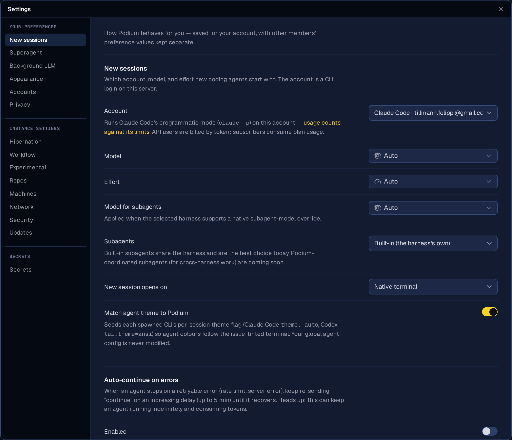
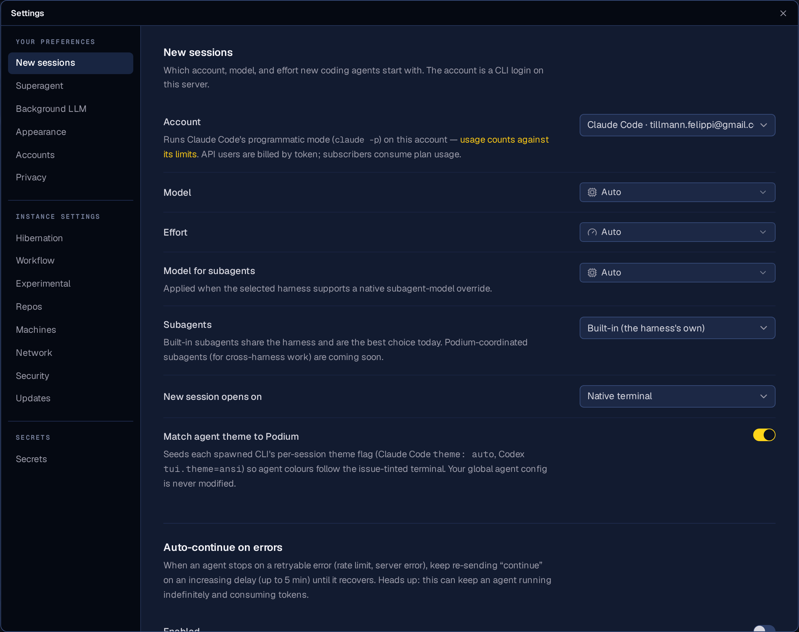
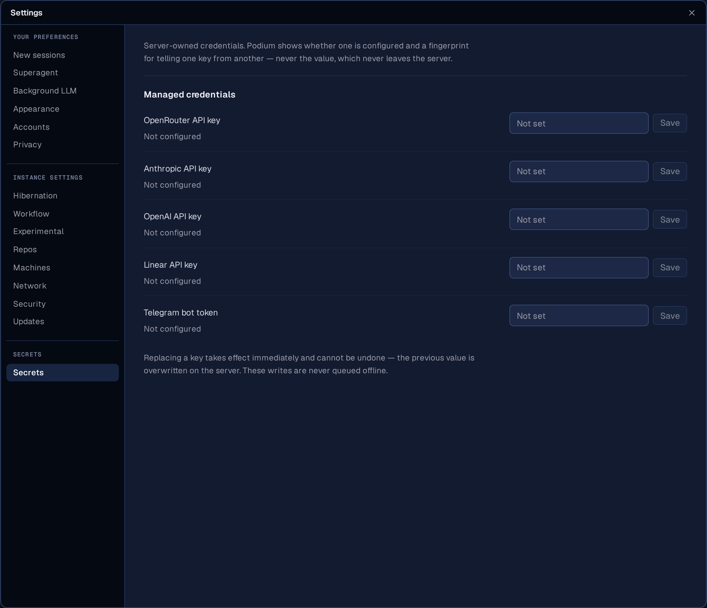
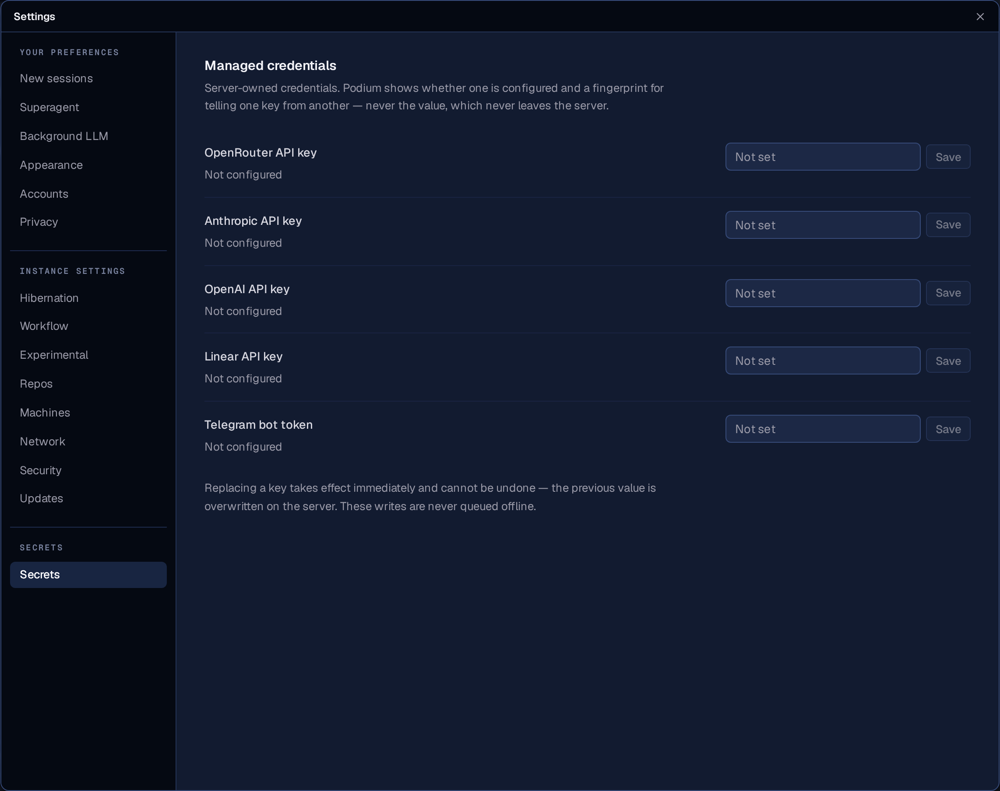
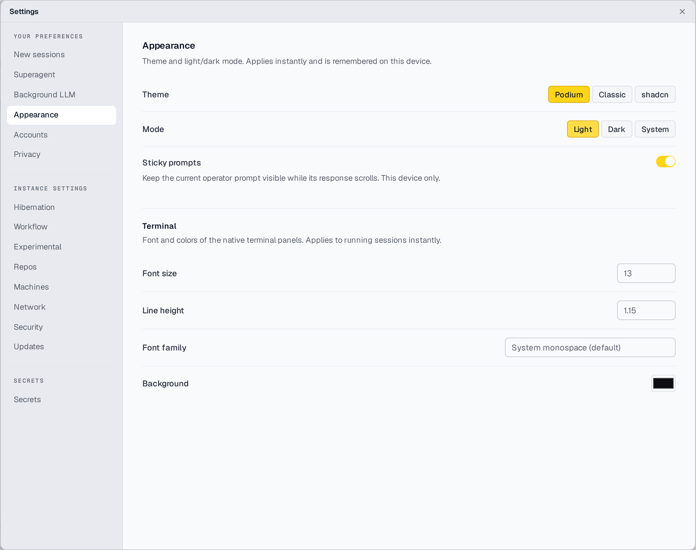
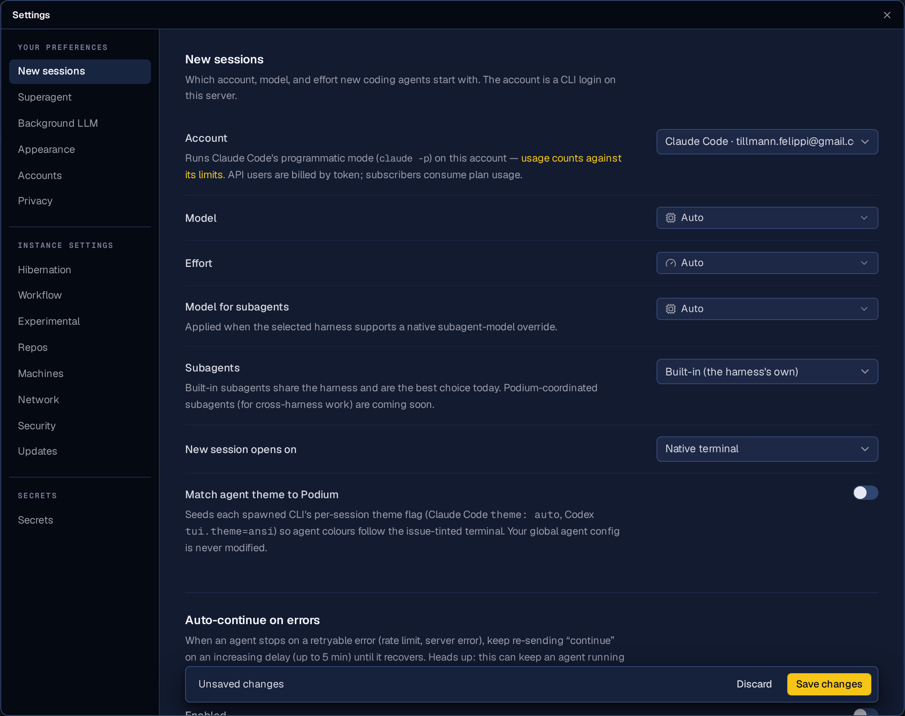

POD-407 · settings sheet
The settings sheet gets a reading tier
The shell is 12px because you live in it. Settings is a surface you visit, read one sentence on, decide, and leave — so its content moves one step up, its spacing grows with it, and the class banner that opened every single tab is gone.
New sessions
The repeated banner is gone, so the pane now opens on the tab's own heading instead of on the same paragraph the previous six tabs opened with.


The scale
Five ranks carry the whole surface, and every step moves on two axes — size plus weight or ink — because 13 against 13.5 is not a hierarchy on its own.
| Rank | Was | Now | Job |
|---|---|---|---|
| Section heading | 13 / 600 | 15 / 600 | the tab's subject |
| Group heading | 12 / 600 | 13 / 600 | a group inside a section |
| Row label | 12.5 / 400 | 13.5 / 500 | the thing a row controls |
| Field value | 12.5 | 13.5 | never louder than its label |
| Prose | 12 / 1.55 | 13 / 1.6 | every explanation, one 62ch measure |
| Micro | 11 | 12 | status crumbs, never an instruction |
| Rail item | 12 | 13 | a step under the pane it navigates to |
| Mono eyebrow | 9 | 9.5 | the class over a group of rows |
The rail
Seventeen destinations in three classes. Wider (184 → 200), taller rows, and a bigger gap between classes than inside them — that ratio is the only thing telling a reader this is three groups and not one long list.


What else moved
- The class banner is gone from every tab. The same sentence rendered on seven preference tabs and eight instance tabs, above the heading that says what the tab actually is. The rail's three group headings still name the class, once. The one sentence worth keeping — that a secret's value never leaves the server — now sits on the Secrets section itself.
-
The sheet's width is computed, not asserted.
rail + seam + padding + formas acalc(), so it cannot drift from its parts again: 1049 → 1141px, with the form column holding a true 62ch measure, a 36px gutter and a 280px control column. - Rhythm scaled with the type. Rows 12 → 14px of padding, sections 26/20 → 32/24, pane padding 22/28 → 28/32, and a deeper bottom so the floating Save bar can never cover the last control.
- Chrome did not join the tier. The sheet header and the command bar behind it stay at the shell's 12px — a utility whose frame grew with its content stops reading as part of the app.
- Forty-six hand-spelled sizes were folded into the scale across the seventeen tabs, so a new section inherits the ranks instead of inventing a size.
Daylight, and the dirty bar
Both checked in the running app, not asserted.

